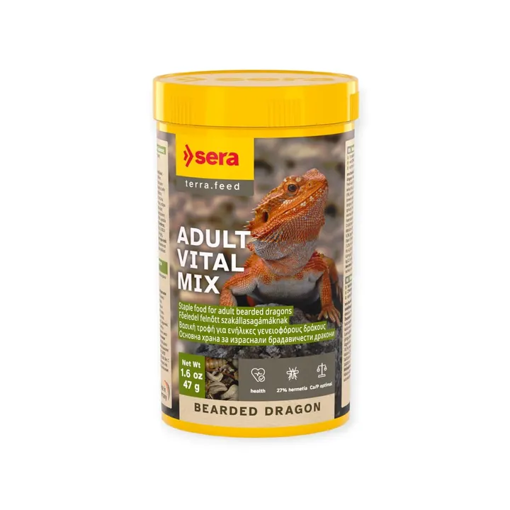

من مجموعة أكوا هافنAQUA HAVEN / THE COLLECTION
طعام Sera للتنين الملتحي البالغ – 47 جم
طعام أساسي للتنين الملتحي البالغ بـ27% يرقات Hermetia ومكونات نباتية مختارة مثل الهندباء والكركديه — تغذية متوازنة وعظام صحية.
٥٥ ر.س
متاح ضمن اللقطة المرجعية
هذه معاينة للتصميم. الأسعار والخيارات والتوفر مرجعية وغير متزامنة؛ لا يمكن الطلب أو الدفع من هذه الصفحة.
A CLOSER LOOK
نظرة أقرب.
طعام Sera للتنين الملتحي البالغ – 47 جم — طعام أساسي للتنين الملتحي البالغ بـ27% يرقات Hermetia ومكونات نباتية مختارة مثل الهندباء والكركديه — تغذية متوازنة وعظام صحية.
المميزات
- 27% يرقات Hermetia كبروتين حيواني عالي الجودة
- مكونات نباتية مختارة (هندباء 12%، كركديه 5%) لتغذية متوازنة
- نسبة كالسيوم/فوسفور مثالية لعظام صحية
- قاعدة غذائية يومية تُدمج مع الطعام الطازج
- بدون ألوان صناعية أو مواد حافظة
طريقة الاستخدام
يُقدّم كطعام أساسي يومي، مع تنويع بالطعام الطازج المناسب.
المواصفات الأساسية
- العلامة: سيرا (Sera) – ألمانيا
- نوع المنتج: طعام أساسي للزواحف
- الحجم: 250 مل (47 جم)
- مناسب لـ: التنين الملتحي البالغ
- رقم الصنف: 33105
المكونات
يرقات Hermetia illucens (27%)، طحين قمح، هندباء (12%)، نشا ذرة، أزهار كركديه (5%)، جلوتين قمح، سليلوز، كربونات كالسيوم، خميرة بيرة، زيت كانولا، ألياف تفاح، لسان الحمل، قرّاص، برسيم، سبيرولينا، بقدونس، طحالب بحرية، فلفل حلو، سبانخ، جزر، حلبة، شمر، يانسون، MOS، بلح البحر الأخضر، Haematococcus. فيتامينات A، D3، E، B1، B2، C مثبّت.
التحليل الغذائي
بروتين خام 18.5% · دهون خام 11.0% · ألياف خام 10.0% · رطوبة 6.5% · رماد خام 10.0% · كالسيوم 2.0% · فوسفور 0.3%
المصدر: الموقع الرسمي لشركة sera الألمانية.